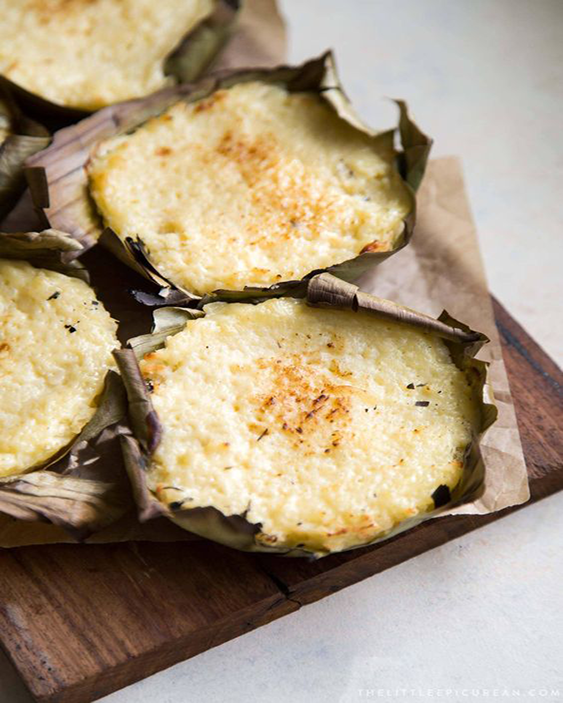

classic filipino merienda

cassa bibingka recipe
Ingredients
- 3 large eggs
- 1 ¼ cup (250 g) granulated sugar1- 13.5 oz can (400 ml) coconut milk¾ cup (192 g) evaporated milk1 Tablespoon (14 g) unsalted butter, melted½ kg (about 1 pound/16 oz) grated fresh coconut1 kg (about 2.5 pounds/40 oz) grated cassava rootgenerous pinch kosher salt, or fine sea saltbanana leaves, as neededmelted butter, as needed for brushing
Instruction
- Preheat oven to 350°F. Prepare banana leaves.
- BANANA LEAVES: Thaw frozen banana leaves. Wash before using. Wipe leaves dry. Pass banana leaf over an open flame (stove-top) 2-3 times to make the leaves more pliable. Hold the leaves using tongs to prevent burning your fingers. DO NOT BURN THE LEAVES.
- Once leaves are flexible, use scissors to cut leaves into appropriate size to line mini pie tins or tart shells. Grease banana leaves with softened butter and set aside.
- CAKE BATTER: In a large bowl, whisk together eggs, sugar, coconut milk, evaporated milk, and melted butter until smooth. Add grated cassava and grated fresh coconut. Season with salt. Fold until mixture is well combined.
- Spoon about a rounded cup of mixture into each prepared mini pie tin (more if using a larger/wider tart shell). Spread mixture into an layer. Bake for 20-22 minutes until cake is almost set.
- TOPPING: While cake is baking, prepare topping. In a small heavy-bottomed sauce pot, whisk together coconut cream, condensed milk, sugar, egg yolks, and butter. Set over medium heat. Stirring continuously, bring mixture to a boil. Reduce to a simmer and continue to stir until mixture has thickened.
- Remove cakes from oven. Spread a thin layer of coconut cream topping over each cake. Remove to oven and cook for another 10-12 minutes until cakes are completely set. If desired, set up broiler for 30 seconds to gently caramelize sugar on topping. BE CAREFUL because banana leaves may flame and fire.
- Cassava bibingka can be served warm, at room temperature, or chilled. Season with additional salt to make the cake taste “sweeter.” Alternatively, baked cakes can be topped with grated salted hard cheese or salted duck eggs.
puto rice recipe
Ingredients
- 4 cups rice flour
- 1 ½ cups sugar
- 3 tablespoons baking powder
- ½ teaspoon salt
- 2 cups water
- 1 can (13.5 ounces) coconut milk
- non-stick cooking spray or melted butter
Instruction
- In a bowl, combine rice flour, sugar, baking powder, and salt. Whisk until distributed.
- Add water and coconut milk. Stir until smooth and well-blended. Cover with film and refrigerate overnight.
- Lightly spray insides of puto molds with non-stick cooking or lightly brush with melted butter. Pour puto batter into molds until ¾ full.
- In the bottom part of the steamer, add water and bring to a boil. Arrange filled puto molds in a single layer on the steamer basket. Place steamer basket over the bottom part. Wrap lid of the steamer with cheesecloth or any cotton material (to prevent condensation from dripping onto puto) and cover steamer.
- Steam for about 15 minutes or until a toothpick inserted in center comes out clean.
- Remove from the heat and allow to slightly cool and gently remove puto from the molds.
leche flan recipe
Ingredients
- 10 pieces eggs
- 1 can condensed milk (14 oz)
- 1 cup fresh milk or evaporated milk
- 1 cup granulated sugar
- 1 teaspoon vanilla extract
Instruction
- Using all the eggs, separate the yolk from the egg white (only egg yolks will be used).
- Place the egg yolks in a big bowl then beat them using a fork or an egg beater
- Add the condensed milk and mix thoroughly
- Pour-in the fresh milk and Vanilla. Mix well
- Put the mold (llanera) on top of the stove and heat using low fire
- Put-in the granulated sugar on the mold and mix thoroughly until the solid sugar turns into liquid (caramel) having a light brown color. Note: Sometimes it is hard to find a Llanera (Traditional flan mold) depending on your location. I find it more convenient to use individual Round Pans in making leche flan.
- Spread the caramel (liquid sugar) evenly on the flat side of the mold
- Wait for 5 minutes then pour the egg yolk and milk mixture on the mold
- Cover the top of the mold using an Aluminum foil
- Steam the mold with egg and milk mixture for 30 to 35 minutes.
- After steaming, let the temperature cool down then refrigerate
- Serve for dessert. Share and Enjoy
buko pandan salad recipe
Ingredients
- 1 1/2 cup young coconut cut into strips
- 5 ounces condensed milk
- 8 ounces Table cream or all-purpose cream
- 3 ounces powdered gelatin
- 1 1/4 cups water
- 6 drops Buko Pandan flavoring
- 2 scoops vanilla ice cream optional
- 1/2 cup sago pearls cooked (optional)
Instruction
- Combine water and powdered gelatin then stir using a spoon.
- Add Buko Pandan flavoring then stir until everything is evenly distributed.
- Heat a saucepan and pour-in the mixture. Bring to a boil while continuously stirring.
- Turn off the heat and transfer the mixture to a mold. Allow the temperature to cool. The texture of the mixture should be firm once cooled. You may also place this inside the refrigerator for faster results (allow the temperature to go down before putting-in the refrigerator).
- Combine condensed milk, table cream, sago pearls, and young coconut then mix well. Allow the texture to thicken by chilling in the refrigerator or freezer for a few hours.
- Slice the firm gelatin into 1 inch cubes then combine with the condensed milk-cream-young coconut-sago mixture.
- Transfer to individual serving platters or cups then top with a scoop of vanilla ice-cream.
- Serve for dessert. Share and enjoy!
cassava cake recipe
Ingredients
- 2 packs grated cassava about 2 lbs total weight
- 2 cups coconut milk
- 1/2 12 oz. can evaporated milk
- 3 pieces egg
- 1/4 cup butter melted
- 6 tablespoons cheddar cheese grated
- 1/2 cup condensed milk
- 14 tablespoons granulated white sugar
toppings
- 2 tablespoons flour
- 2 tablespoons sugar
- 1/2 cup condensed milk
- 2 tablespoons cheddar cheese grated
- 2 cups coconut milk
Instruction
- Make the batter by combining the grated cassava, butter, 1/2 cup condensed milk, 1/2 cup evaporated milk, 6 tablespoons cheddar cheese, 14 tablespoons sugar, and 2 eggs in a mixing bowl and mix thoroughly.
- Add the 2 cups coconut milk in the mixing bowl where the mixed ingredients are. Mix again.
- Grease the baking tray then pour-in the batter (these are the ingredients that you just mixed together).
- Pre -heat oven for 350 degrees Fahrenheit for 10 minutes then put-in the baking tray with batter and bake for 1 hour.Remove from the oven and set aside.
- Meanwhile prepare the topping by combining 2 tablespoons sugar and flour in the heated saucepan.
- Pour-in 1/2 cup condensed milk then mix thoroughly.
- Add 2 tablespoons cheddar cheese while stirring constantly.
- Pour 2 cups of coconut milk and stir constantly for 10 minutes
- Pour the topping over the Cassava Cake (baked batter) and spread evenly.
- Separate the yolk from the egg white of the remaining egg (we’ll be needing the egg white only)
- Glaze the topping with the egg white using a basting brush. Simply dip the brush to the egg white and brush it on the cassava cake.
- Set your oven to broil mode. Broil the Cassava cake until color turns light brown.
- Garnish with extra grated cheese on top. Serve. Share and enjoy!
ube halaya recipe
Ingredients
- 1.5 lbs (675g) ube (fresh or frozen)
- 1 cup (8floz/240ml) evaporated milk
- 1 cup (8floz/240ml) full fat coconut milk
- 1 can (1 cup/ 14oz/397g) condensed milk
- 1 cup (8oz/225g) sugar
- ½ cup (4oz/115g) butter
- 1 tablespoon lemon juice
- 2 teaspoons vanilla extract
- ¼ teaspoon salt
Instruction
- Wash the ube but leave the skins on. Steam or boil them whole until tender in the middle, roughly 30-40 minutes depending on size.
- Once cooked through, let them cool down before peeling off the skin. Roughly chop into cubes and set aside. Note: Once cooked, ube can be stored in the freezer in an airtight container for months. You can get the ube ready in advance of making your jam.
- In a heavy bottom, large pot, add the cooked ube, evaporated milk, coconut milk, condensed mil and sugar.
- With an immersion blender, blend the mixture to make the ube as smooth and silky as possible. (You can also do this in a liquidizer, food processor or using a hand masher)
- Once smooth, move the pot to the stove and place on a lid. Heat over medium/low until it comes to a simmer.
- Simmer for roughly 40-45 minutes. Stir the mixture continually while cooking, to prevent the jam from sticking to the bottom of the pot and burning. The jam mix will spit so just be careful when you remove the lid.
- When the jam has thickened, whisk in the butter, lemon juice, vanilla, and salt. Remember that the ube halaya will thicken greatly as it cools down so factor that in.
- Carefully spoon the mixture into jars while hot. Then close with the lids. Allow the jam to cool down to room temperature. The ube jam will last in the fridge for about 5 days, but I like to divide up into smaller amounts and freeze for up to 4 months.
suman recipe
Ingredients
- 2 cups Glutinous rice (Malagkit)
- 1 tsp. salt
- 2 cups fresh or 1 canned coconut milk (400 ml)
- banana leaves for wrapping
- water for boiling
- 1 cup sugar (brown or white)
latik(caramelized coconut cream)
- 1 can coconut milk
- 1 cup brown sugar
- 1/2 tsp. salt
Instruction
- Soak the glutinous rice (malagkit) in water for 2 to 3 hrs and then drain well
- Meanwhile, prepare banana leaves by cutting it into 10 by 10 (inches) sheets and trim stiff ends.
- Briefly pass the leaves over flames for 10 to 20 seconds. Set aside.
- In a pot, mix coconut milk, salt, and sugar on medium heat and stir well. Add glutinous rice and cook for 15 minutes. Stir occasionally until liquid is absorbed.
- Remove from heat and allow to cool. Put 2 tablespoons on banana leaf.
- Roll leaves tightly. Leave 1 inch on top and bottom side. Fold edges to seal and tie with a string.
- In a steamer, stack the suman and steam for around 30 minutes to one hour over boiling water. Make sure they are tender before removing them from the steamer.
- Allow it to cool before unwrapping so that it will firm up.
- Serve with sugar, sweetened grated coconut, latik or ripe mango. Share & enjoy!
latik(caramelized coconut cream)
- In a pan, mix coconut milk, brown sugar and salt.
- Stir well and cook on medium heat and bring to a boil until well mixed.
- Turn of heat and serve
polvoron recipe
Ingredients
- 2 cups flour
- 1 cup powdered full cream milk (Nido)
- 1 cup sugar
- 1 cup butter, melted
For The Pinipig Flavor
- ½ cup pinipig
For The Cashew Or Peanut Flavor
- ½ cup unsalted cashew or peanut
For The Cookies And Cream Flavor
- 6 Oreo cookies
- 1 tablespoon butter, melted
Instruction
- In a skillet over medium heat, add flour. Toast, stirring regularly, until lightly browned and aromatic. Remove from heat and allow to cool.
- In a bowl, whisk together toasted flour, powdered milk, and sugar until well combined. Add butter and continue to stir until well combined.
- Transfer mixture into a flat baking dish and using a polvoron mold, shape into solid cookies. Make sure mold is as compact as possible.
- Arrange in a single layer on a baking sheet and freeze until firm for about 30 minutes.
- Wrap individually in cellophane or Japanese paper wrappers.
For The Pinipig Flavor
- >In a skillet over medium heat, add pinipig. Toast, stirring regularly, until lightly browned and begins to pop. Remove from pan and allow to cool.
- >In a food processor, process until coarsely ground.
- >Add to polvoron mixture and whisk together until well combined.
For The Cashew Or Peanut Flavor
- >In a skillet over medium heat, add cashews or peanuts. Toast, stirring regularly, until aromatic. Remove from pan and allow to cool.
- >In a food processor, process until coarsely ground.
- >Add to polvoron mixture and whisk together until well combined.
For The Cookies And Cream Flavor
- >Scrape off cream filling from cookies.
- >In a food processor, process until coarsely ground.
- >Add to polvoron mixture plus additional 1 tablespoon butter and whisk together until well combined.
biko recipe
Ingredients
- 2 cups glutinous rice aka sticky rice or malagkit
- 1 1/2 cups water
- 2 cups brown sugar
- 4 cups coconut milk
- 1/2 tsp salt
Instruction
- Combine the sticky rice and water in a rice cooker and cook until the rice is ready (we intentionally combined lesser amount of water than the usual so that the rice will not be fully cooked)
- While the rice is cooking, combine the coconut milk with brown sugar and salt in a separate pot and cook in low heat until the texture becomes thick. Stir constantly.
- Once the rice is cooked and the coconut milk-sugar mixture is thick enough, add the cooked rice in the coconut milk and sugar mixture then mix well. Continue cooking until all the liquid evaporates (but do not overcook).
- Scoop the cooked biko and place it in a serving plate then flatten the surface.
- Share and Enjoy